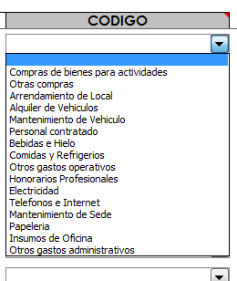

|
Compras de bienes para actividades
= Se refiere a toda la compra de materiales, artículos, o herramientas
que tengan como destino se usados en una actividad Scout.
|
Otras compras =
Son todas la compra de materiales, artículos, o herramientas que NO
vayan a ser usados en una actividad Scout; pero que aún así pasarán a
ser propiedada de la organización.
|
Arrendamiento de Local
= Corresponde al pago por concepto de alquiler, de cualquier inmueble
(salón, casa, finca, terreno, etc.) que haya sido usado para alguna
actividad o evento Scout. Incluyendo fiestas y celebraciones.
|
Alquiler de Vehículos
= Abarca el pago por concepto de transporte (incluyendo vehículos con o
sin chofer) que se haya utilizado para alguna actividad o evento
scouts, así como también para las diligencias previas a un evento, o
para gestiones que tengan que ver con el beneficio de la institución.
|
| Mantenimiento de Vehiculo = Se refiere los gastos ocasionados por la
reparaciones, mantenimiento o mejoras hechas a los vehículos propiedad
de la institución. |
Personal contratado
= Son los pagos que se derivan al emplear a alguien para un trabajo, en
función de alguna actividad, evento o trabajo en general. |
| Bebidas e hielo = Contempla la compra de agua, bebidas y/o hielo, así como los servicios conexos; para cualquier evento o actividad. Incluyendo reuniones, consejos y asambleas. |
Comidas y Refrigerios =
Contempla la compra de comida preparada o sin preparar, así como los
servicios conexos, para cualquier evento o actividad. Incluyendo
reuniones, consejos y asambleas. |
| Otros gastos operativos = Cualquier otro dinero desembolsado por la organización en el desarrollo de sus funciones. |
Honorarios Profesionales =
Remuneración pagada a un profesional en libre ejercicio por su trabajo.
Es la paga que percibe una persona que ejerce su profesión de manera
independiente (y no bajo relación de dependencia). Ejemplo: Abogados,
Médicos, Contadores, etc. |
Electricidad = Todos los pagos concernientes al pago de servicio eléctrico o similares.
|
Teléfonos e Internet =
Todos los gastos concernientes a los servicios de telefonía fija o
celular, así como también de Internet, que estén relacionados con las
actividades y eventos, o el funcionamiento día a día de la organización.
|
Mantenimiento de Sede =
Se refiere los gastos ocasionados por la reparaciones, mantenimiento o
mejoras hechas a los locales propiedad de la institución, o que nos han
sido alquilados, prestados o cedidos para nuestro uso.
|
Papelería = Comprar relacionadas con sobres o papel mebretado,
recibos, tarjetas de visita, volantes, afiches, plegables y todo el
material que se emplea para la comunicación gráfica, de la organización. |
Insumos de Oficina = Son todos los bienes consumibles que se utilizan para los trabajos de oficina (lápices, marcadores, tinta, clips, cinta, etc).
|
Otros gastos administrativos = Cualquier otro gasto no contemplado ya, que se se genere por el manejo o dirección de la institución.
|
|


 IMPORTANTE
IMPORTANTE En
vista de los antes expuesto, para completar cada hoja de reporte agrupe
las copias de los cheques emitidos, bauches de retiro o depósitos,
comprobantes de las transferencias realizadas, facturas y recibos; y
engrápelos en la parte posterior.
En
vista de los antes expuesto, para completar cada hoja de reporte agrupe
las copias de los cheques emitidos, bauches de retiro o depósitos,
comprobantes de las transferencias realizadas, facturas y recibos; y
engrápelos en la parte posterior. 
 Para
acceder a este Instructivo, busca la pestaña Instructivo en la parte
inferior del libro (junto a la de los meses), y luego pulsa sobre el
botón Ir al Instructivo, que aparece en esa hoja.
Para
acceder a este Instructivo, busca la pestaña Instructivo en la parte
inferior del libro (junto a la de los meses), y luego pulsa sobre el
botón Ir al Instructivo, que aparece en esa hoja.